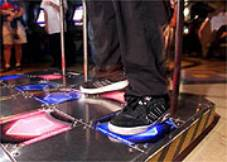
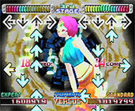

"My waistline has gone down by one inch. . ." (CBS Worldwide Inc.)
"In, like, two weeks, I've lost 15 pounds. . ." (CBS Worldwide Inc.)
"I've been 145 pounds my whole life, and now I'm 135, and I don't have 10 pounds to lose. I check out all the buffets I can." (della Cava)
What are all of these people talking about? Perhaps the latest all soy bean diet? No. The newest cardiovascular home work-out system? Wrong again. The answer: An arcade game! Dance Dance Revolution (or DDR as it is commonly called), created by the Japanese game company Konami, is one of the biggest phenomena to hit the arcade scene in years, and it is quite unlike anything you have probably ever played before.
DDR doesn't use any of the conventional forms of arcade game interface with which most people are familiar. While most traditional games are played with your hands and utilize a combination of a joystick and buttons or a possibly a hand-held gun, DDR is played using only your feet. The player stands on a platform that has four lighted foot pads for each of the directions that they will need to step (forward, back, left, and right). Arrows corresponding to each foot placement direction are displayed on the screen and scroll upward. Players score points, and ultimately succeed or fail,by stepping on lighted directional arrows beneath their feet at the appropriate time.It is somewhat like a mix between "Simon" and "Twister" merged with techno dance music. Feedback is provided by an announcer voice that will either praise you when you are doing well or mock you when you are not. Progress through the game is based solely on your ability to step on the arrows at the proper time. If your timing is good, you are rewarded with cheering and a higher score; if your timing is lacking, all you will hear is jeering and "boos" and eventually "game over."
For my testing, I purchased the Playstation game console version of the game as well as the recommended dance pad. The game can be played with a standard hand-held game pad, but I am not sure why you would want to bother playing it with your thumbs since it would not be nearly as challenging.While DDR originated as an arcade game, the premise is the same no matter where you play it; playing it at home simply allowed me to try it as many times as I wanted without additional cost and also saved me the embarrassment of performing in front of others. While the performance aspect is likely a part of the game's original intent, I chose to simply evaluate the game itself and not the social activities surrounding it.
The home version of the game includes two additional game modes not found in the arcade: training and exercise. Training mode slowly introduces you to the different techniques for improving your dance steps, while exercise mode is a non-stop workout that doesn't keep score (thus, you can never lose). Though the game play concept is simple, it is initially quite difficult to master. I found the game to be quite difficult to play at first and actually somewhat aggravating. What was often frustrating is when I would miss one of the arrows, and then in the process of trying to get back into the rhythm of the game, I would miss many, many more; however, after about 30 minutes or so, I started start to get the hang of it. I had played the game for over an hour before I noticed that I was getting a good workout and having fun playing a video game at the same time. My thighs were actually quite sore the next day!
DDR relies heavily on your ability to time your foot movements with the visual and audio clues coming from the screen. If you are unable to sync your movements with the rhythm of the music, you will fail miserably. While most of the timing is dependent on watching the arrows and stepping at the right time, you can almost exclusively use the beat of the music to time your footsteps once you get a feel for the game. DDR is structured in such a way that if a person is really good at listening to the beat of the music, the only visual clues they will need is which arrows to step on and not when. The arcade version takes this a step further with an available difficulty level in which the arrows are not visible at all, and the player relies entirely on the music and their memorization of the steps for the particular song being played.
What most intrigues me about the game is that unlike virtually every other video game that I have played, Dance Dance Revolution requires that the player be involved in a very real and physical way. While most arcade or home video games are a complete detachment from the physical world, DDR demands that you merge the physical and game worlds together into an unusual cohesion. Typically, I enjoy being detached from the physical world when playing a game; I enjoy sitting down, relaxing, and absorbing myself in the provided game world and its activities. Being detached from the physical world has its advantages; for example, in the physical world, I cannot jump 30 feet in the air or shoot laser beams from my eyes like I might be able to in a game world. DDR however, does not allow for this detachment. It requires you to become physically involved in a video game world. In a certain respect, DDR is using the video game apparatus against itself by defeating the detachment that many would consider to be the primary purpose of video games. And while it won't necessarily make you a good dancer in real life, it certainly forces you to use your physical body for interaction with the game machine.
Oddly enough, DDR has already become quite popular in arcades nationwide, and its popularity increases daily. There are groups on the Internet who organize entire events and competitions based around Dance Dance Revolution. There are web sites such as DDRfreak.com that even allow you to search a database for the nearest DDR video game machine. Fanatics of the game are even willing spend thousands of dollars to purchase their very own arcade machines to play at home. Others see the game as a great opportunity for a fun exercise routine; most recently, a Los Angeles middle school used Dance Dance Revolution's health benefits as an opportunity to get kids more involved in PE classes. The results have proven to be quite positive; students are losing weight and are more willing to participate in class activities because of the game. Without even realizing it, they are also getting a really good exercise. "This is compared to a Stairmaster or jogging, you can burn just as many calories," says coach Fenwick (CBS Worldwide Inc.). It is funny to think that by playing a "video game"; you could be burning a significant amount of calories, but as my thighs can attest, it is quite possible.
This brings me to a question. . . Do people really want to be burning calories when playing a video game? Is this physical involvement really a desirable thing? Some would say that it definitely is.
A quote from della Cava's article in USA Today states, "I used to just sit there staring at a screen," says reformed video-game couch potato Samantha Valdez, 15. "Then my dad had me try this. And I am hooked." Later in the same article, Jason Enos, product manager at Konami (the Japanese company behind DDR) claims that "[t]he success of DDR proves that people are sick and tired of passive types of games. Parents have always complained about their kids coming home from school, grabbing a Twinkie and hitting the video game for three hours. No more" (della Cava). Others who just can't seem to master games with a thumb-based interface find DDR to be quite an enjoyable shift from the norm.
There are also some who think that games like Dance Dance Revolution will lead the way to an actual "revolution" in the way games are perceived as well as the type of games that designers create. "'The game's success. . . offers game makers a compelling reason to find more family-friendly hits,' says Timothy Burke, a Swarthmore College professor who studies pop culture and youth trends" (Libaw). Is it possible that this physical involvement is what has been lacking from video games for so long? Are people tired of game interaction that utilizes only their eyes and fingers? It is difficult to be certain.
While I do see the potential of DDR and games like it, I sadly doubt that it will significantly change the future of electronic gaming. I believe the majority of people play video games for primarily two reasons:
1) They find them to be fun – They enjoy the experience.
2) They desire some level of detachment from reality – They want to be engrossed in a world apart from their own.
I fit nicely it to both of these categories, but Dance Dance Revolution fits only into one. While the game is admittedly enjoyable, I imagine that I will only be playing it when I want a fun alternative to the "Total Gym" exercise machine in my living room. I would liken DDR to racquetball; I enjoy the game, but I wouldn't want to play it every day because I am not always so desirous of recreational fun that I am willing to physically exert myself. Besides, DDR does not offer the detachment from physical reality that I am often seeking in a game-playing experience.
For the people who do not require this "detachment", I imagine that they will flock to this game like lemmings to a cliff. Or, for people who simply enjoy "showing off" in front of others, the arcade version of the game definitely has a certain appeal. Jason Ko, the 22-year-old webmaster of the previously mentioned DDRfreak.com web site, is one good example. Generally a soft-spoken individual, the game has brought out the exhibitionist in him. "I like showing off, getting attention," he says (Libaw). Again, this is not a big selling point for me, hence the reason I purchased the game as opposed to playing it at the arcade. I certainly was not looking to show off for anyone.
Alas, I cannot help but wonder if DDR is just a fad. Are people only drawn to this type of game simply because it is unlike anything else out there? I know that is the only reason I tried it, and I wonder how many others will try it simply out of curiosity. There are other games like it now. . . Boxing games that motion-capture your actual boxing motions, and law enforcement simulations that track your body motions and allow you to "duck" behind game objects and "lean" around virtual walls. While the novelty is enjoyable, I do not know if it is here to stay. Virtua Fighter, a mid-1990's arcade game by Sega, was the first major game release to implement truly three-dimensional fighting characters. Today, every fighting game is created using 3-D characters, and in fact, nearly every major game in general now uses a 3-D graphics display of some sort. Virtua Fighter is now on its fourth itineration, and it is looking better than ever. Even so, while its graphic elements were (and still are) revolutionary, its interface structure is not; it still adheres to the standard joystick and various "punch", "kick", and "defend" buttons.
Perhaps the world is not yet ready for mainstream entertainment that requires an individual to use their entire body as the "joystick". I know I get exhausted just imagining myself trying to jump kick a friend in the chest while simultaneously flailing my virtual fists in the direction of his simulated head. It will be an interesting journey to see where the next few decades take us in the realm of new designs for game interactivity. Only time will tell whether or not Dance Dance Revolution will be the Olympic event of the future or simply just a toy store novelty item.